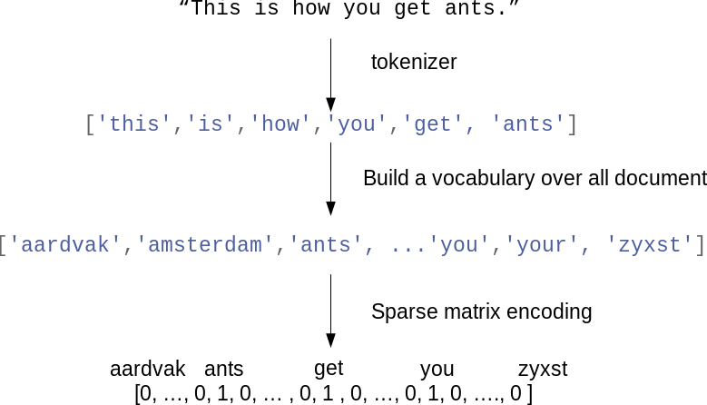
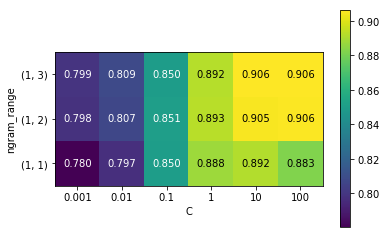
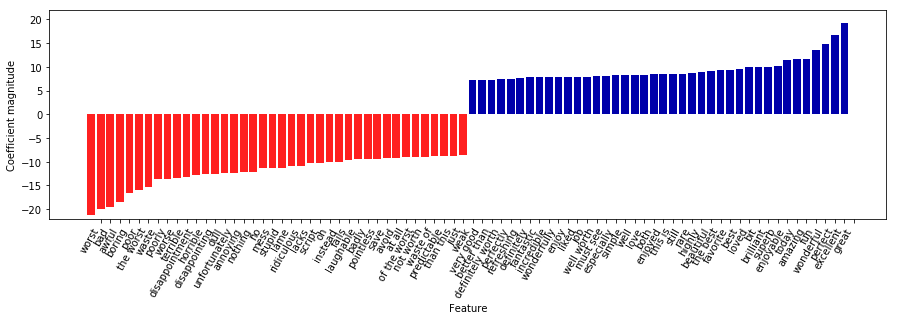
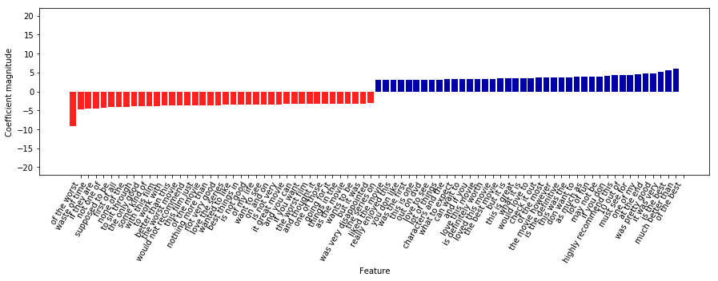
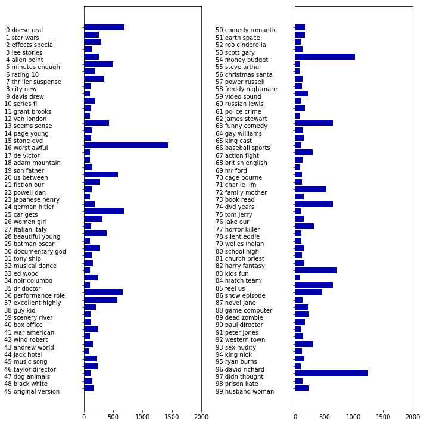

%matplotlib inline
from preamble import *Chapter 7 - Working with Text Data
Working with Text Data
Types of data represented as strings
Example application: Sentiment analysis of movie reviews
! wget -nc http://ai.stanford.edu/~amaas/data/sentiment/aclImdb_v1.tar.gz -P data
! tar xzf data/aclImdb_v1.tar.gz --skip-old-files -C dataFile ‘data/aclImdb_v1.tar.gz’ already there; not retrieving.
!tree -dL 2 data/aclImdbdata/aclImdb
├── test
│ ├── neg
│ └── pos
└── train
├── neg
├── pos
└── unsup
7 directories!rm -r data/aclImdb/train/unsupfrom sklearn.datasets import load_files
reviews_train = load_files("data/aclImdb/train/")
# load_files returns a bunch, containing training texts and training labels
text_train, y_train = reviews_train.data, reviews_train.target
print("type of text_train: {}".format(type(text_train)))
print("length of text_train: {}".format(len(text_train)))
print("text_train[6]:\n{}".format(text_train[6]))type of text_train: <class 'list'>
length of text_train: 25000
text_train[6]:
b"This movie has a special way of telling the story, at first i found it rather odd as it jumped through time and I had no idea whats happening.<br /><br />Anyway the story line was although simple, but still very real and touching. You met someone the first time, you fell in love completely, but broke up at last and promoted a deadly agony. Who hasn't go through this? but we will never forget this kind of pain in our life. <br /><br />I would say i am rather touched as two actor has shown great performance in showing the love between the characters. I just wish that the story could be a happy ending."text_train = [doc.replace(b"<br />", b" ") for doc in text_train]np.unique(y_train)array([0, 1])print("Samples per class (training): {}".format(np.bincount(y_train)))Samples per class (training): [12500 12500]reviews_test = load_files("data/aclImdb/test/")
text_test, y_test = reviews_test.data, reviews_test.target
print("Number of documents in test data: {}".format(len(text_test)))
print("Samples per class (test): {}".format(np.bincount(y_test)))
text_test = [doc.replace(b"<br />", b" ") for doc in text_test]Number of documents in test data: 25000
Samples per class (test): [12500 12500]Representing text data as Bag of Words

Applying bag-of-words to a toy dataset
bards_words =["The fool doth think he is wise,",
"but the wise man knows himself to be a fool"]from sklearn.feature_extraction.text import CountVectorizer
vect = CountVectorizer()
vect.fit(bards_words)CountVectorizer(analyzer='word', binary=False, decode_error='strict',
dtype=<class 'numpy.int64'>, encoding='utf-8', input='content',
lowercase=True, max_df=1.0, max_features=None, min_df=1,
ngram_range=(1, 1), preprocessor=None, stop_words=None,
strip_accents=None, token_pattern='(?u)\\b\\w\\w+\\b',
tokenizer=None, vocabulary=None)print("Vocabulary size: {}".format(len(vect.vocabulary_)))
print("Vocabulary content:\n {}".format(vect.vocabulary_))Vocabulary size: 13
Vocabulary content:
{'the': 9, 'fool': 3, 'doth': 2, 'think': 10, 'he': 4, 'is': 6, 'wise': 12, 'but': 1, 'man': 8, 'knows': 7, 'himself': 5, 'to': 11, 'be': 0}bag_of_words = vect.transform(bards_words)
print("bag_of_words: {}".format(repr(bag_of_words)))bag_of_words: <2x13 sparse matrix of type '<class 'numpy.int64'>'
with 16 stored elements in Compressed Sparse Row format>print("Dense representation of bag_of_words:\n{}".format(
bag_of_words.toarray()))Dense representation of bag_of_words:
[[0 0 1 1 1 0 1 0 0 1 1 0 1]
[1 1 0 1 0 1 0 1 1 1 0 1 1]]Bag-of-word for movie reviews
vect = CountVectorizer().fit(text_train)
X_train = vect.transform(text_train)
print("X_train:\n{}".format(repr(X_train)))X_train:
<25000x74849 sparse matrix of type '<class 'numpy.int64'>'
with 3431196 stored elements in Compressed Sparse Row format>feature_names = vect.get_feature_names()
print("Number of features: {}".format(len(feature_names)))
print("First 20 features:\n{}".format(feature_names[:20]))
print("Features 20010 to 20030:\n{}".format(feature_names[20010:20030]))
print("Every 2000th feature:\n{}".format(feature_names[::2000]))Number of features: 74849
First 20 features:
['00', '000', '0000000000001', '00001', '00015', '000s', '001', '003830', '006', '007', '0079', '0080', '0083', '0093638', '00am', '00pm', '00s', '01', '01pm', '02']
Features 20010 to 20030:
['dratted', 'draub', 'draught', 'draughts', 'draughtswoman', 'draw', 'drawback', 'drawbacks', 'drawer', 'drawers', 'drawing', 'drawings', 'drawl', 'drawled', 'drawling', 'drawn', 'draws', 'draza', 'dre', 'drea']
Every 2000th feature:
['00', 'aesir', 'aquarian', 'barking', 'blustering', 'bête', 'chicanery', 'condensing', 'cunning', 'detox', 'draper', 'enshrined', 'favorit', 'freezer', 'goldman', 'hasan', 'huitieme', 'intelligible', 'kantrowitz', 'lawful', 'maars', 'megalunged', 'mostey', 'norrland', 'padilla', 'pincher', 'promisingly', 'receptionist', 'rivals', 'schnaas', 'shunning', 'sparse', 'subset', 'temptations', 'treatises', 'unproven', 'walkman', 'xylophonist']from sklearn.model_selection import cross_val_score
from sklearn.linear_model import LogisticRegression
scores = cross_val_score(LogisticRegression(), X_train, y_train, cv=5)
print("Mean cross-validation accuracy: {:.2f}".format(np.mean(scores)))Mean cross-validation accuracy: 0.88from sklearn.model_selection import GridSearchCV
param_grid = {'C': [0.001, 0.01, 0.1, 1, 10]}
grid = GridSearchCV(LogisticRegression(), param_grid, cv=5)
grid.fit(X_train, y_train)
print("Best cross-validation score: {:.2f}".format(grid.best_score_))
print("Best parameters: ", grid.best_params_)Best cross-validation score: 0.89
Best parameters: {'C': 0.1}X_test = vect.transform(text_test)
print("Test score: {:.2f}".format(grid.score(X_test, y_test)))Test score: 0.88vect = CountVectorizer(min_df=5).fit(text_train)
X_train = vect.transform(text_train)
print("X_train with min_df: {}".format(repr(X_train)))X_train with min_df: <25000x27271 sparse matrix of type '<class 'numpy.int64'>'
with 3354014 stored elements in Compressed Sparse Row format>feature_names = vect.get_feature_names()
print("First 50 features:\n{}".format(feature_names[:50]))
print("Features 20010 to 20030:\n{}".format(feature_names[20010:20030]))
print("Every 700th feature:\n{}".format(feature_names[::700]))First 50 features:
['00', '000', '007', '00s', '01', '02', '03', '04', '05', '06', '07', '08', '09', '10', '100', '1000', '100th', '101', '102', '103', '104', '105', '107', '108', '10s', '10th', '11', '110', '112', '116', '117', '11th', '12', '120', '12th', '13', '135', '13th', '14', '140', '14th', '15', '150', '15th', '16', '160', '1600', '16mm', '16s', '16th']
Features 20010 to 20030:
['repentance', 'repercussions', 'repertoire', 'repetition', 'repetitions', 'repetitious', 'repetitive', 'rephrase', 'replace', 'replaced', 'replacement', 'replaces', 'replacing', 'replay', 'replayable', 'replayed', 'replaying', 'replays', 'replete', 'replica']
Every 700th feature:
['00', 'affections', 'appropriately', 'barbra', 'blurbs', 'butchered', 'cheese', 'commitment', 'courts', 'deconstructed', 'disgraceful', 'dvds', 'eschews', 'fell', 'freezer', 'goriest', 'hauser', 'hungary', 'insinuate', 'juggle', 'leering', 'maelstrom', 'messiah', 'music', 'occasional', 'parking', 'pleasantville', 'pronunciation', 'recipient', 'reviews', 'sas', 'shea', 'sneers', 'steiger', 'swastika', 'thrusting', 'tvs', 'vampyre', 'westerns']grid = GridSearchCV(LogisticRegression(), param_grid, cv=5)
grid.fit(X_train, y_train)
print("Best cross-validation score: {:.2f}".format(grid.best_score_))Best cross-validation score: 0.89Stop-words
from sklearn.feature_extraction.text import ENGLISH_STOP_WORDS
print("Number of stop words: {}".format(len(ENGLISH_STOP_WORDS)))
print("Every 10th stopword:\n{}".format(list(ENGLISH_STOP_WORDS)[::10]))Number of stop words: 318
Every 10th stopword:
['they', 'of', 'who', 'found', 'none', 'co', 'full', 'otherwise', 'never', 'have', 'she', 'neither', 'whereby', 'one', 'any', 'de', 'hence', 'wherever', 'whose', 'him', 'which', 'nine', 'still', 'from', 'here', 'what', 'everything', 'us', 'etc', 'mine', 'find', 'most']# Specifying stop_words="english" uses the built-in list.
# We could also augment it and pass our own.
vect = CountVectorizer(min_df=5, stop_words="english").fit(text_train)
X_train = vect.transform(text_train)
print("X_train with stop words:\n{}".format(repr(X_train)))X_train with stop words:
<25000x26966 sparse matrix of type '<class 'numpy.int64'>'
with 2149958 stored elements in Compressed Sparse Row format>grid = GridSearchCV(LogisticRegression(), param_grid, cv=5)
grid.fit(X_train, y_train)
print("Best cross-validation score: {:.2f}".format(grid.best_score_))Best cross-validation score: 0.88Rescaling the Data with tf-idf
\[\begin{equation*} \text{tfidf}(w, d) = \text{tf} \log\big(\frac{N + 1}{N_w + 1}\big) + 1 \end{equation*}\]
from sklearn.feature_extraction.text import TfidfVectorizer
from sklearn.pipeline import make_pipeline
pipe = make_pipeline(TfidfVectorizer(min_df=5, norm=None),
LogisticRegression())
param_grid = {'logisticregression__C': [0.001, 0.01, 0.1, 1, 10]}
grid = GridSearchCV(pipe, param_grid, cv=5)
grid.fit(text_train, y_train)
print("Best cross-validation score: {:.2f}".format(grid.best_score_))Best cross-validation score: 0.89vectorizer = grid.best_estimator_.named_steps["tfidfvectorizer"]
# transform the training dataset:
X_train = vectorizer.transform(text_train)
# find maximum value for each of the features over dataset:
max_value = X_train.max(axis=0).toarray().ravel()
sorted_by_tfidf = max_value.argsort()
# get feature names
feature_names = np.array(vectorizer.get_feature_names())
print("Features with lowest tfidf:\n{}".format(
feature_names[sorted_by_tfidf[:20]]))
print("Features with highest tfidf: \n{}".format(
feature_names[sorted_by_tfidf[-20:]]))Features with lowest tfidf:
['poignant' 'disagree' 'instantly' 'importantly' 'lacked' 'occurred'
'currently' 'altogether' 'nearby' 'undoubtedly' 'directs' 'fond' 'stinker'
'avoided' 'emphasis' 'commented' 'disappoint' 'realizing' 'downhill'
'inane']
Features with highest tfidf:
['coop' 'homer' 'dillinger' 'hackenstein' 'gadget' 'taker' 'macarthur'
'vargas' 'jesse' 'basket' 'dominick' 'the' 'victor' 'bridget' 'victoria'
'khouri' 'zizek' 'rob' 'timon' 'titanic']sorted_by_idf = np.argsort(vectorizer.idf_)
print("Features with lowest idf:\n{}".format(
feature_names[sorted_by_idf[:100]]))Features with lowest idf:
['the' 'and' 'of' 'to' 'this' 'is' 'it' 'in' 'that' 'but' 'for' 'with'
'was' 'as' 'on' 'movie' 'not' 'have' 'one' 'be' 'film' 'are' 'you' 'all'
'at' 'an' 'by' 'so' 'from' 'like' 'who' 'they' 'there' 'if' 'his' 'out'
'just' 'about' 'he' 'or' 'has' 'what' 'some' 'good' 'can' 'more' 'when'
'time' 'up' 'very' 'even' 'only' 'no' 'would' 'my' 'see' 'really' 'story'
'which' 'well' 'had' 'me' 'than' 'much' 'their' 'get' 'were' 'other'
'been' 'do' 'most' 'don' 'her' 'also' 'into' 'first' 'made' 'how' 'great'
'because' 'will' 'people' 'make' 'way' 'could' 'we' 'bad' 'after' 'any'
'too' 'then' 'them' 'she' 'watch' 'think' 'acting' 'movies' 'seen' 'its'
'him']Investigating model coefficients
mglearn.tools.visualize_coefficients(
grid.best_estimator_.named_steps["logisticregression"].coef_,
feature_names, n_top_features=40)
Bag of words with more than one word (n-grams)
print("bards_words:\n{}".format(bards_words))bards_words:
['The fool doth think he is wise,', 'but the wise man knows himself to be a fool']cv = CountVectorizer(ngram_range=(1, 1)).fit(bards_words)
print("Vocabulary size: {}".format(len(cv.vocabulary_)))
print("Vocabulary:\n{}".format(cv.get_feature_names()))Vocabulary size: 13
Vocabulary:
['be', 'but', 'doth', 'fool', 'he', 'himself', 'is', 'knows', 'man', 'the', 'think', 'to', 'wise']cv = CountVectorizer(ngram_range=(2, 2)).fit(bards_words)
print("Vocabulary size: {}".format(len(cv.vocabulary_)))
print("Vocabulary:\n{}".format(cv.get_feature_names()))Vocabulary size: 14
Vocabulary:
['be fool', 'but the', 'doth think', 'fool doth', 'he is', 'himself to', 'is wise', 'knows himself', 'man knows', 'the fool', 'the wise', 'think he', 'to be', 'wise man']print("Transformed data (dense):\n{}".format(cv.transform(bards_words).toarray()))Transformed data (dense):
[[0 0 1 1 1 0 1 0 0 1 0 1 0 0]
[1 1 0 0 0 1 0 1 1 0 1 0 1 1]]cv = CountVectorizer(ngram_range=(1, 3)).fit(bards_words)
print("Vocabulary size: {}".format(len(cv.vocabulary_)))
print("Vocabulary:\n{}".format(cv.get_feature_names()))Vocabulary size: 39
Vocabulary:['be', 'be fool', 'but', 'but the', 'but the wise', 'doth', 'doth think', 'doth think he', 'fool', 'fool doth', 'fool doth think', 'he', 'he is', 'he is wise', 'himself', 'himself to', 'himself to be', 'is', 'is wise', 'knows', 'knows himself', 'knows himself to', 'man', 'man knows', 'man knows himself', 'the', 'the fool', 'the fool doth', 'the wise', 'the wise man', 'think', 'think he', 'think he is', 'to', 'to be', 'to be fool', 'wise', 'wise man', 'wise man knows']
pipe = make_pipeline(TfidfVectorizer(min_df=5), LogisticRegression())
# running the grid-search takes a long time because of the
# relatively large grid and the inclusion of trigrams
param_grid = {'logisticregression__C': [0.001, 0.01, 0.1, 1, 10, 100],
"tfidfvectorizer__ngram_range": [(1, 1), (1, 2), (1, 3)]}
grid = GridSearchCV(pipe, param_grid, cv=5)
grid.fit(text_train, y_train)
print("Best cross-validation score: {:.2f}".format(grid.best_score_))
print("Best parameters:\n{}".format(grid.best_params_))Best cross-validation score: 0.91
Best parameters:
{'logisticregression__C': 100, 'tfidfvectorizer__ngram_range': (1, 3)}# extract scores from grid_search
scores = grid.cv_results_['mean_test_score'].reshape(-1, 3).T
# visualize heat map
heatmap = mglearn.tools.heatmap(
scores, xlabel="C", ylabel="ngram_range", cmap="viridis", fmt="%.3f",
xticklabels=param_grid['logisticregression__C'],
yticklabels=param_grid['tfidfvectorizer__ngram_range'])
plt.colorbar(heatmap)
# extract feature names and coefficients
vect = grid.best_estimator_.named_steps['tfidfvectorizer']
feature_names = np.array(vect.get_feature_names())
coef = grid.best_estimator_.named_steps['logisticregression'].coef_
mglearn.tools.visualize_coefficients(coef, feature_names, n_top_features=40)
plt.ylim(-22, 22)
# find 3-gram features
mask = np.array([len(feature.split(" ")) for feature in feature_names]) == 3
# visualize only 3-gram features
mglearn.tools.visualize_coefficients(coef.ravel()[mask],
feature_names[mask], n_top_features=40)
plt.ylim(-22, 22)
Advanced tokenization, stemming and lemmatization
import spacy
import nltk
# load spacy's English-language models
en_nlp = spacy.load('en')
# instantiate nltk's Porter stemmer
stemmer = nltk.stem.PorterStemmer()
# define function to compare lemmatization in spacy with stemming in nltk
def compare_normalization(doc):
# tokenize document in spacy
doc_spacy = en_nlp(doc)
# print lemmas found by spacy
print("Lemmatization:")
print([token.lemma_ for token in doc_spacy])
# print tokens found by Porter stemmer
print("Stemming:")
print([stemmer.stem(token.norm_.lower()) for token in doc_spacy])compare_normalization(u"Our meeting today was worse than yesterday, "
"I'm scared of meeting the clients tomorrow.")Lemmatization:
['our', 'meeting', 'today', 'be', 'bad', 'than', 'yesterday', ',', 'i', 'be', 'scar', 'of', 'meet', 'the', 'client', 'tomorrow', '.']
Stemming:
['our', 'meet', 'today', 'wa', 'wors', 'than', 'yesterday', ',', 'i', "'m", 'scare', 'of', 'meet', 'the', 'client', 'tomorrow', '.']# Technicallity: we want to use the regexp based tokenizer
# that is used by CountVectorizer and only use the lemmatization
# from SpaCy. To this end, we replace en_nlp.tokenizer (the SpaCy tokenizer)
# with the regexp based tokenization
import re
# regexp used in CountVectorizer:
regexp = re.compile('(?u)\\b\\w\\w+\\b')
# load spacy language model
en_nlp = spacy.load('en', disable=['parser', 'ner'])
old_tokenizer = en_nlp.tokenizer
# replace the tokenizer with the preceding regexp
en_nlp.tokenizer = lambda string: old_tokenizer.tokens_from_list(
regexp.findall(string))
# create a custom tokenizer using the SpaCy document processing pipeline
# (now using our own tokenizer)
def custom_tokenizer(document):
doc_spacy = en_nlp(document)
return [token.lemma_ for token in doc_spacy]
# define a count vectorizer with the custom tokenizer
lemma_vect = CountVectorizer(tokenizer=custom_tokenizer, min_df=5)# transform text_train using CountVectorizer with lemmatization
X_train_lemma = lemma_vect.fit_transform(text_train)
print("X_train_lemma.shape: {}".format(X_train_lemma.shape))
# standard CountVectorizer for reference
vect = CountVectorizer(min_df=5).fit(text_train)
X_train = vect.transform(text_train)
print("X_train.shape: {}".format(X_train.shape))X_train_lemma.shape: (25000, 21637)
X_train.shape: (25000, 27271)# build a grid-search using only 1% of the data as training set:
from sklearn.model_selection import StratifiedShuffleSplit
param_grid = {'C': [0.001, 0.01, 0.1, 1, 10]}
cv = StratifiedShuffleSplit(n_splits=5, test_size=0.99,
train_size=0.01, random_state=0)
grid = GridSearchCV(LogisticRegression(), param_grid, cv=cv)
# perform grid search with standard CountVectorizer
grid.fit(X_train, y_train)
print("Best cross-validation score "
"(standard CountVectorizer): {:.3f}".format(grid.best_score_))
# perform grid search with Lemmatization
grid.fit(X_train_lemma, y_train)
print("Best cross-validation score "
"(lemmatization): {:.3f}".format(grid.best_score_))Best cross-validation score (standard CountVectorizer): 0.721
Best cross-validation score (lemmatization): 0.731Topic Modeling and Document Clustering
Latent Dirichlet Allocation
vect = CountVectorizer(max_features=10000, max_df=.15)
X = vect.fit_transform(text_train)from sklearn.decomposition import LatentDirichletAllocation
lda = LatentDirichletAllocation(n_topics=10, learning_method="batch",
max_iter=25, random_state=0)
# We build the model and transform the data in one step
# Computing transform takes some time,
# and we can save time by doing both at once
document_topics = lda.fit_transform(X)print("lda.components_.shape: {}".format(lda.components_.shape))lda.components_.shape: (10, 10000)# for each topic (a row in the components_), sort the features (ascending).
# Invert rows with [:, ::-1] to make sorting descending
sorting = np.argsort(lda.components_, axis=1)[:, ::-1]
# get the feature names from the vectorizer:
feature_names = np.array(vect.get_feature_names())# Print out the 10 topics:
mglearn.tools.print_topics(topics=range(10), feature_names=feature_names,
sorting=sorting, topics_per_chunk=5, n_words=10)topic 0 topic 1 topic 2 topic 3 topic 4
-------- -------- -------- -------- --------
between war funny show didn
family world comedy series saw
young us guy episode thought
real american laugh tv am
us our jokes episodes thing
director documentary fun shows got
work history humor season 10
both years re new want
beautiful new hilarious years going
each human doesn television watched
topic 5 topic 6 topic 7 topic 8 topic 9
-------- -------- -------- -------- --------
action kids role performance horror
effects action cast role house
nothing animation john john killer
budget children version actor gets
script game novel cast woman
minutes disney director plays dead
original fun both jack girl
director old played michael around
least 10 mr oscar goes
doesn kid young father wife
lda100 = LatentDirichletAllocation(n_topics=100, learning_method="batch",
max_iter=25, random_state=0)
document_topics100 = lda100.fit_transform(X)topics = np.array([7, 16, 24, 25, 28, 36, 37, 41, 45, 51, 53, 54, 63, 89, 97])sorting = np.argsort(lda100.components_, axis=1)[:, ::-1]
feature_names = np.array(vect.get_feature_names())
mglearn.tools.print_topics(topics=topics, feature_names=feature_names,
sorting=sorting, topics_per_chunk=5, n_words=20)topic 7 topic 16 topic 24 topic 25 topic 28
-------- -------- -------- -------- --------
thriller worst german car beautiful
suspense awful hitler gets young
horror boring nazi guy old
atmosphere horrible midnight around romantic
mystery stupid joe down between
house thing germany kill romance
director terrible years goes wonderful
quite script history killed heart
bit nothing new going feel
de worse modesty house year
performances waste cowboy away each
dark pretty jewish head french
twist minutes past take sweet
hitchcock didn kirk another boy
tension actors young getting loved
interesting actually spanish doesn girl
mysterious re enterprise now relationship
murder supposed von night saw
ending mean nazis right both
creepy want spock woman simple
topic 36 topic 37 topic 41 topic 45 topic 51
-------- -------- -------- -------- --------
performance excellent war music earth
role highly american song space
actor amazing world songs planet
cast wonderful soldiers rock superman
play truly military band alien
actors superb army soundtrack world
performances actors tarzan singing evil
played brilliant soldier voice humans
supporting recommend america singer aliens
director quite country sing human
oscar performance americans musical creatures
roles performances during roll miike
actress perfect men fan monsters
excellent drama us metal apes
screen without government concert clark
plays beautiful jungle playing burton
award human vietnam hear tim
work moving ii fans outer
playing world political prince men
gives recommended against especially moon
topic 53 topic 54 topic 63 topic 89 topic 97
-------- -------- -------- -------- --------
scott money funny dead didn
gary budget comedy zombie thought
streisand actors laugh gore wasn
star low jokes zombies ending
hart worst humor blood minutes
lundgren waste hilarious horror got
dolph 10 laughs flesh felt
career give fun minutes part
sabrina want re body going
role nothing funniest living seemed
temple terrible laughing eating bit
phantom crap joke flick found
judy must few budget though
melissa reviews moments head nothing
zorro imdb guy gory lot
gets director unfunny evil saw
barbra thing times shot long
cast believe laughed low interesting
short am comedies fulci few
serial actually isn re half
# sort by weight of "music" topic 45
music = np.argsort(document_topics100[:, 45])[::-1]
# print the five documents where the topic is most important
for i in music[:10]:
# show first two sentences
print(b".".join(text_train[i].split(b".")[:2]) + b".\n")b'I love this movie and never get tired of watching. The music in it is great.\n'
b"I enjoyed Still Crazy more than any film I have seen in years. A successful band from the 70's decide to give it another try.\n"
b'Hollywood Hotel was the last movie musical that Busby Berkeley directed for Warner Bros. His directing style had changed or evolved to the point that this film does not contain his signature overhead shots or huge production numbers with thousands of extras.\n'
b"What happens to washed up rock-n-roll stars in the late 1990's? They launch a comeback / reunion tour. At least, that's what the members of Strange Fruit, a (fictional) 70's stadium rock group do.\n"
b'As a big-time Prince fan of the last three to four years, I really can\'t believe I\'ve only just got round to watching "Purple Rain". The brand new 2-disc anniversary Special Edition led me to buy it.\n'
b"This film is worth seeing alone for Jared Harris' outstanding portrayal of John Lennon. It doesn't matter that Harris doesn't exactly resemble Lennon; his mannerisms, expressions, posture, accent and attitude are pure Lennon.\n"
b"The funky, yet strictly second-tier British glam-rock band Strange Fruit breaks up at the end of the wild'n'wacky excess-ridden 70's. The individual band members go their separate ways and uncomfortably settle into lackluster middle age in the dull and uneventful 90's: morose keyboardist Stephen Rea winds up penniless and down on his luck, vain, neurotic, pretentious lead singer Bill Nighy tries (and fails) to pursue a floundering solo career, paranoid drummer Timothy Spall resides in obscurity on a remote farm so he can avoid paying a hefty back taxes debt, and surly bass player Jimmy Nail installs roofs for a living.\n"
b"I just finished reading a book on Anita Loos' work and the photo in TCM Magazine of MacDonald in her angel costume looked great (impressive wings), so I thought I'd watch this movie. I'd never heard of the film before, so I had no preconceived notions about it whatsoever.\n"
b'I love this movie!!! Purple Rain came out the year I was born and it has had my heart since I can remember. Prince is so tight in this movie.\n'
b"This movie is sort of a Carrie meets Heavy Metal. It's about a highschool guy who gets picked on alot and he totally gets revenge with the help of a Heavy Metal ghost.\n"fig, ax = plt.subplots(1, 2, figsize=(10, 10))
topic_names = ["{:>2} ".format(i) + " ".join(words)
for i, words in enumerate(feature_names[sorting[:, :2]])]
# two column bar chart:
for col in [0, 1]:
start = col * 50
end = (col + 1) * 50
ax[col].barh(np.arange(50), np.sum(document_topics100, axis=0)[start:end])
ax[col].set_yticks(np.arange(50))
ax[col].set_yticklabels(topic_names[start:end], ha="left", va="top")
ax[col].invert_yaxis()
ax[col].set_xlim(0, 2000)
yax = ax[col].get_yaxis()
yax.set_tick_params(pad=130)
plt.tight_layout()